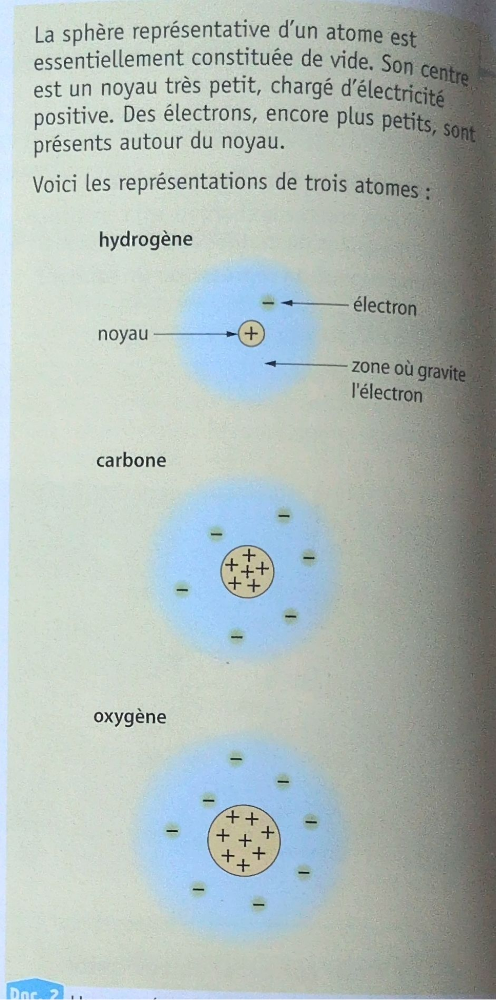
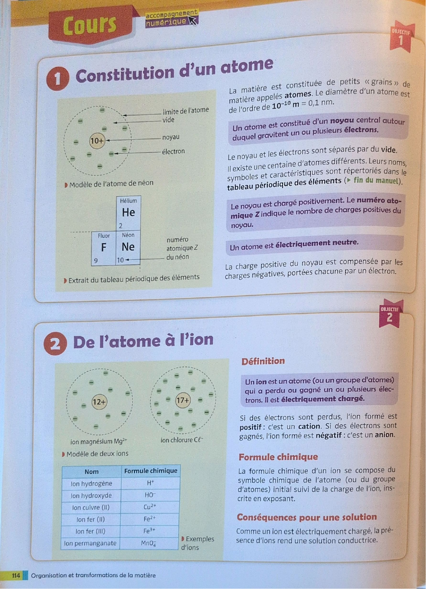
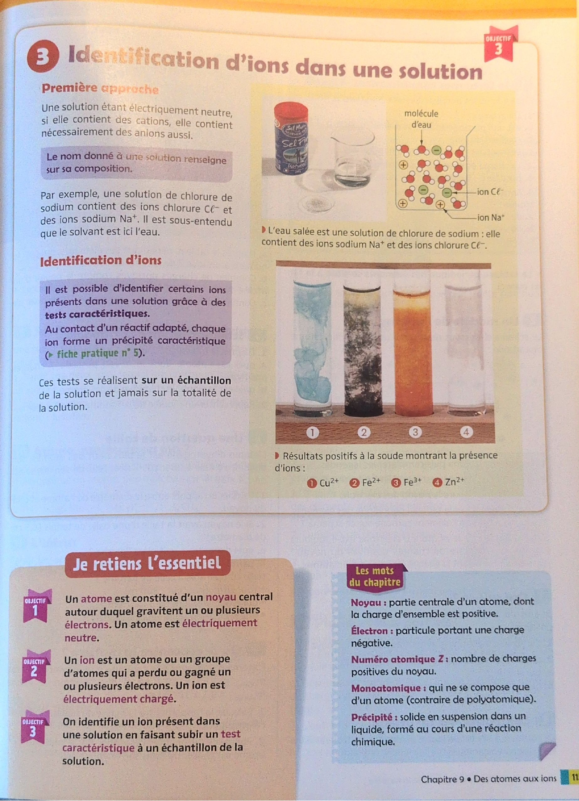

Deux chapitres sont dans le cahier : la masse volumique, puis l’atome.
S’y ajoutent les pages du manuel sur le chapitre 9, « Des atomes aux ions ».
La lecture complète reprend les expériences et les calculs du cahier. La synthèse garde les formules et les résultats.
L’extra va plus loin que le cahier, sur les mêmes notions.
Chapitre 1 — La masse volumique
ρ = m / V. Masse en g, volume en mL, masse volumique en g/mL. Pour l’eau, 1 g/mL : c’est une convention, le gramme a été défini comme la masse d’un centimètre cube d’eau.
50 g pour 50 mL. ρ = 50 / 50 = 1 g/mL.
45,9 g pour 50 mL. ρ = 45,9 / 50 = 0,918 g/mL.
L’eau et l’huile ne se mélangent pas. L’huile reste au-dessus, parce que sa masse volumique est plus petite.
La matière est faite d’atomes. Des atomes liés ensemble forment une molécule.
Un atome : un noyau, et des électrons qui gravitent autour. Entre les deux, du vide. Structure lacunaire.
Dans le noyau : protons, charge +, et neutrons, sans charge. Les électrons ont une charge −.
Un atome est électriquement neutre : autant de protons que d’électrons.
Z est le numéro atomique, le nombre de protons. A est le nombre de masse, protons + neutrons. N = A − Z.
Exemple du cahier, le cuivre : 6329Cu. Z = 29, A = 63, donc N = 34 neutrons.
Les isotopes d’un élément ont le même Z et un A différent. Carbone 12, 13 et 14 sont des isotopes du carbone.
Manuel, chapitre 9 — Des atomes aux ions
Thomson (et Perrin) mettent en évidence l’électron, de charge négative. Modèle de Thomson : un « pudding », pâte positive avec des électrons dedans.
Modèle planétaire : des électrons qui gravitent autour d’un noyau central positif.
Il montre qu’il y a du vide entre le noyau et les électrons. Le modèle de Perrin est confirmé.
Un atome mesure environ 10−10 m = 0,1 nm. Il est électriquement neutre.
Z indique le nombre de charges positives du noyau. Il y a autant d’électrons.
Un ion est un atome, ou un groupe d’atomes, qui a perdu ou gagné un ou plusieurs électrons. Perdus : ion positif, un cation. Gagnés : ion négatif, un anion.
Formule d’un ion : le symbole, avec la charge en exposant. Mg2+, Cl−, Na+.
Les ions rendent une solution conductrice. Une solution est neutre : s’il y a des cations, il y a aussi des anions.
On identifie un ion par un test caractéristique sur un échantillon : un réactif forme un précipité caractéristique.
Chapitre 1 · définition
La masse volumique
La masse volumique ρ d’un échantillon est le quotient de sa masse m par le volume V qu’il occupe.
ρ = m / V, avec ρ en g/mL, m en g, V en mL.
À savoir : ρeau = 1 g/cm³. Un centimètre cube d’eau a une masse de 1 g. Ce n’est pas une coïncidence, c’est une convention.
Expérience du cours : on mesure la masse de deux solides de même volume. Les masses sont différentes. Interprétation : la masse par unité de volume est caractéristique d’une substance. Sur le document, les balances affichent 172,5 g et 210,7 g.
Chapitre 1 · liquides
Eau et huile
Protocole : poser une éprouvette graduée vide sur la balance et tarer. Verser 50 mL d’huile, noter la masse. Recommencer avec l’eau.
1 g/mLeau, 50 g / 50 mL
0,918 g/mLhuile, 45,9 g / 50 mL
huile au-dessusmélange hétérogène
Observation de Ruben : l’eau ne se mélange pas avec l’huile. On obtient un mélange hétérogène. L’huile reste au-dessus de l’eau car sa masse volumique est plus petite.
La grandeur qui explique ce comportement est la masse volumique.
Pages 1 et 2 de la fiche, avec les calculs et le schéma du tube à essai.Chapitre 1 · solide
Le laiton
Protocole : verser 80 mL d’eau dans l’éprouvette, plonger une masse marquée en laiton de 23,5 g.
Sur le schéma du cahier, le volume passe de 12,5 mL à 16 mL. Volume de l’objet : V = 16 − 12,5 = 3,5 mL.
ρ = 23,5 / 3,5 = 6,71 g/mL. La masse volumique de cet objet est 6,71 g/mL.
Déplacement d’eau pour le laiton, puis le tableau d’exercices déjà calculé.
Calculs déjà faits sur la fiche
20 g et 25 mL : ρ = 20 / 25 = 0,8 g/mL.
270 g et ρ = 13,5 g/mL : V = 270 / 13,5 = 20 mL.
80 mL et ρ = 1,25 g/mL : m = 1,25 × 80 = 100 g.
Éprouvette : 79 g pour 100 mL, ρ = 79 / 100 = 0,79 g/mL.
Pour une essence à 0,80 g/mL, un litre fait 0,80 × 1000 = 800 g, pas 80 g.
Trois exercices de la feuille ne sont pas encore remplis : les canettes, le pont, l’anneau. Ils utilisent les mêmes relations, m = ρ × V et V = m / ρ.
Chapitre 2
L’atome
La matière est constituée d’atomes. Quand les atomes sont liés ensemble, ils forment une molécule.
L’atome est constitué d’un noyau autour duquel gravitent un ou plusieurs électrons, portant chacun une charge négative.
Le noyau est constitué de particules chargées positivement, les protons, et de particules sans charge électrique, les neutrons. Protons et neutrons sont les nucléons.
Structure lacunaire : entre les électrons et le noyau, il y a du vide.
L’atome est électriquement neutre : autant de protons (charge +) que d’électrons (charge −).
Tous les atomes sont répertoriés dans la classification périodique des éléments. Ils sont classés selon leur numéro atomique Z.
Z correspond au nombre de protons dans le noyau. Le nombre de nucléons, aussi appelé nombre de masse, est noté A. Le nombre de neutrons est noté N. A = Z + N, donc N = A − Z.
Schéma du cahier. Protons positifs, électrons négatifs, neutrons neutres. Exemple noté : Z = 8, N = 24, A = 32.Notation AZX. Les carbones 12, 13 et 14 sont des isotopes de l’élément carbone.
Exemple recopié, l’atome de cuivre : 6329Cu. Z = 29, A = 63, N = 63 − 29 = 34 neutrons.
La feuille d’exercices du chapitre 2, atome de sodium et lingot d’or, est dans le scan. Elle n’est pas encore remplie.
Repérer les adverbes et les pronoms interrogatifs : qui, comment, pourquoi.
Reformuler en phrase affirmative : « Pour répondre, je dois… »
Manuel · chapitre 9 · activité 1
Des atomes aux ions : les hypothèses historiques
Ces pages viennent du manuel de physique-chimie (pages 109 à 117), pas du cahier. Le chapitre 9 du manuel prolonge le chapitre 2 du cahier, « L’atome ». Rien n’est écrit à la main sur ces photos.
Le chapitre a trois objectifs : décrire la composition d’un atome, décrire la composition d’un ion monoatomique, identifier certains ions présents dans une solution. Trois questions l’ouvrent : comment représenter un atome ? L’eau pure peut-elle conduire le courant électrique ? Sur une bandelette de piscine, comment lit-on le taux d’une espèce chimique ?
Document 1 : des hypothèses historiques
Les physiciens Joseph John Thomson (anglais, 1856-1940) et Jean Perrin (français, 1870-1942) découvrent l’existence des électrons, des particules de charge électrique négative.
La matière, donc les atomes, est électriquement neutre. Les atomes doivent donc contenir aussi un constituant chargé positivement.
Deux modèles s’opposent. Thomson imagine l’atome comme un pudding : une « pâte » positive contenant des « raisins » négatifs, les électrons. Perrin imagine un modèle planétaire : des électrons négatifs qui « gravitent » autour d’un noyau central positif.
Quelques années plus tard, l’Anglais Ernest Rutherford (1871-1937) met en évidence le vide entre le noyau et les électrons. L’hypothèse de Perrin est confirmée.
Retouche signalée : le manuel écrit « au XXe siècle » pour la découverte de l’électron. Elle date de 1897, donc de la fin du XIXe siècle.
Document 2 : représenter un atome
La sphère qui représente un atome est essentiellement constituée de vide. Au centre, un noyau très petit, chargé positivement. Autour, des électrons encore plus petits. Le manuel dessine l’hydrogène (1 charge + au noyau, 1 électron), le carbone (6 et 6) et l’oxygène (8 et 8).
Questions a à d de l’exploitation (dessiner les modèles de Thomson et de Perrin, dire lequel a été retenu, ce qui distingue des atomes différents, à quoi correspond le numéro Z) : pas encore remplies.

Document 2 du manuel : noyau positif au centre, électrons autour, beaucoup de vide.Manuel · chapitre 9 · cours
Constitution d’un atome
La matière est constituée de petits « grains » appelés atomes. Le diamètre d’un atome est de l’ordre de 10−10 m = 0,1 nm.
Un atome est constitué d’un noyau central autour duquel gravitent un ou plusieurs électrons. Le noyau et les électrons sont séparés par du vide.
Il existe une centaine d’atomes différents. Leurs noms, symboles et caractéristiques sont dans le tableau périodique des éléments, à la fin du manuel.
Le noyau est chargé positivement. Le numéro atomique Z indique le nombre de charges positives du noyau. Exemple du manuel : le néon, Ne, Z = 10.
Un atome est électriquement neutre. La charge positive du noyau est compensée par les charges négatives, portées chacune par un électron.

Page 114 du manuel : modèle de l’atome de néon, ions magnésium et chlorure, tableau d’ions.Manuel · chapitre 9 · cours
De l’atome à l’ion
Un ion est un atome (ou un groupe d’atomes) qui a perdu ou gagné un ou plusieurs électrons. Il est électriquement chargé.
Si des électrons sont perdus, l’ion est positif : c’est un cation.
Si des électrons sont gagnés, l’ion est négatif : c’est un anion.
Formule chimique : le symbole de l’atome (ou du groupe d’atomes), suivi de la charge de l’ion en exposant.
Comme un ion est chargé, la présence d’ions rend une solution conductrice.
Exemples du manuel : ion magnésium Mg2+ (noyau 12+), ion chlorure Cl− (noyau 17+).
H+ion hydrogène
HO−ion hydroxyde
Cu2+ion cuivre (II)
Fe2+ion fer (II)
Fe3+ion fer (III)
MnO4−ion permanganate
Manuel · chapitre 9 · cours
Identifier des ions dans une solution
Une solution est électriquement neutre : si elle contient des cations, elle contient aussi des anions.
Le nom d’une solution renseigne sur sa composition. Une solution de chlorure de sodium contient des ions chlorure Cl− et des ions sodium Na+. Le solvant sous-entendu est l’eau : l’eau salée en est un exemple.
On peut identifier certains ions grâce à des tests caractéristiques. Au contact d’un réactif adapté, chaque ion forme un précipité caractéristique (fiche pratique n° 5 du manuel).
Ces tests se font sur un échantillon de la solution, jamais sur toute la solution.
Photo du manuel : avec la soude, des précipités montrent la présence des ions Cu2+, Fe2+, Fe3+ et Zn2+.
Je retiens l’essentiel
Un atome est constitué d’un noyau central autour duquel gravitent un ou plusieurs électrons. Un atome est électriquement neutre.
Un ion est un atome ou un groupe d’atomes qui a perdu ou gagné un ou plusieurs électrons. Un ion est électriquement chargé.
On identifie un ion présent dans une solution en faisant subir un test caractéristique à un échantillon de la solution.

Page 115 du manuel : eau salée, précipités obtenus avec la soude, l’essentiel et les mots du chapitre.
Les mots du chapitre 9
Noyau
Partie centrale d’un atome, dont la charge d’ensemble est positive.
Électron
Particule portant une charge négative.
Numéro atomique Z
Nombre de charges positives du noyau.
Monoatomique
Qui ne se compose que d’un atome (contraire de polyatomique).
Précipité
Solide en suspension dans un liquide, formé au cours d’une réaction chimique.
Cation, anion
Ion positif (électrons perdus), ion négatif (électrons gagnés).
Manuel · chapitre 9 · exercices
Exercices des pages 116 et 117
Aucun n’est encore fait. Les solutions des QCM sont page 480 du manuel.
Objectif 1, décrire la composition d’un atome : 1 QCM, 2 modèle de l’atome de carbone, 3 qui suis-je ? (47 charges positives), 4 le soufre, 5 schématiser un atome de 7 charges positives, 6 une question de taille (hydrogène), 7 où se concentre la matière ?
Objectif 2, décrire la composition d’un ion monoatomique : 8 QCM, 9 solution ionique et charge électrique, 10 atome, molécule ou ion ?, 11 l’intrus, 12 qui suis-je ? (29 charges, 27 électrons), 13 l’ion fluorure du dentifrice, 14 l’ion lithium des batteries, 15 les deux ions du fer.
La troisième photo du PDF est un double partiel de la page 116.
Cette partie n’est ni dans le cahier de Ruben, ni dans les pages du manuel. Ce sont des connaissances ajoutées, sur les mêmes notions, pour aller plus loin. Ce qui compte pour le contrôle reste le cours du professeur. Les réponses des exercices du manuel ne sont pas données ici.
Extra · chapitre 1
Les unités, sans se tromper
1 mL = 1 cm³. 1 L = 1 dm³ = 1 000 mL. 1 m³ = 1 000 L.
Une même masse volumique s’écrit de plusieurs façons : 1 g/mL = 1 g/cm³ = 1 kg/L = 1 000 kg/m³. L’eau vaut donc aussi 1 kg/L : un litre d’eau pèse 1 kg.
Avant de calculer, on met la masse et le volume dans des unités qui vont ensemble : g avec mL, kg avec L.
Extra · chapitre 1
Flotter ou couler
Un objet plein flotte sur un liquide si sa masse volumique est plus petite que celle du liquide. Il coule si elle est plus grande. C’est la même règle que pour l’huile au-dessus de l’eau.
0,92 g/cm³glace : elle flotte sur l’eau
2,7 g/cm³aluminium
7,9 g/cm³fer
13,5 g/cm³mercure, un métal liquide
19,3 g/cm³or
1,2 g/Lair, environ 800 fois moins que l’eau
L’eau de mer, salée, a une masse volumique d’environ 1,03 g/mL : on y flotte un peu mieux que dans l’eau douce.
Les masses volumiques servent à identifier une substance : on mesure ρ, puis on compare avec un tableau de valeurs.
Extra · chapitre 2
L’atome, à quelle échelle ?
Un atome mesure environ 10−10 m, soit un dixième de milliardième de mètre. Son noyau est des dizaines de milliers de fois plus petit. L’exercice 6 du manuel fait calculer ce rapport pour l’hydrogène.
Image : si le noyau avait la taille d’une bille au centre d’un stade, les électrons tourneraient aux tribunes. Tout le reste est vide : c’est la structure lacunaire.
Presque toute la masse de l’atome est dans le noyau : l’électron est beaucoup plus léger. L’exercice 7 du manuel fait calculer de combien.
Pour écrire une puissance de 10 : 10−10 m = 0,000 000 000 1 m, avec 10 rangs après la virgule. 1 nm (nanomètre) = 10−9 m.
Extra · chapitre 2
Comment on a découvert l’atome
Le philosophe grec Démocrite imagine des grains insécables, les « atomos ».
Joseph John Thomson découvre l’électron. En 1904, il propose son modèle du « pudding ».
Jean Perrin propose un modèle planétaire. Il recevra le prix Nobel de physique en 1926, pour d’autres travaux sur les atomes.
Ernest Rutherford, avec ses élèves Geiger et Marsden, bombarde une très fine feuille d’or avec des particules. Presque tout passe à travers ; quelques-unes rebondissent. L’atome est surtout du vide, avec un petit noyau positif : le pudding de Thomson est abandonné.
Niels Bohr précise le modèle : les électrons tournent sur des orbites bien définies.
James Chadwick découvre le neutron.
Extra · chapitre 2
Isotopes
Exemple : l’aluminium 2713Al a 13 protons et 27 − 13 = 14 neutrons.
Le carbone 14 est un isotope radioactif : il se transforme lentement. On s’en sert pour dater des restes très anciens, comme des os ou du bois.
Extra · chapitre 9
Les ions, plus loin
Quand un atome devient un ion, seul le nombre d’électrons change. Le noyau, donc Z, reste le même : l’élément chimique ne change pas.
Astuce pour la charge : charge de l’ion = nombre de charges + du noyau − nombre d’électrons. Un ion 2+ a deux électrons de moins que l’atome.
L’eau pure conduit très mal le courant : elle ne contient presque pas d’ions. L’eau du robinet, l’eau de mer ou le corps humain conduisent beaucoup mieux, grâce aux ions dissous. D’où le danger d’un appareil électrique près du bain.
Sur l’étiquette d’une eau minérale, on lit les ions dissous en mg/L : calcium Ca2+, magnésium Mg2+, sodium Na+, hydrogénocarbonate HCO3−, sulfate…
Les couleurs des précipités avec la soude : bleu pour Cu2+, vert pour Fe2+, orange-rouille pour Fe3+, blanc pour Zn2+. Les ions chlorure Cl− se testent avec du nitrate d’argent : précipité blanc qui noircit à la lumière.
La soude est corrosive : lunettes et gants pour faire ces tests.
Quiz
10 questions tirées au hasard parmi . Chaque tirage change les questions et l’ordre des réponses.